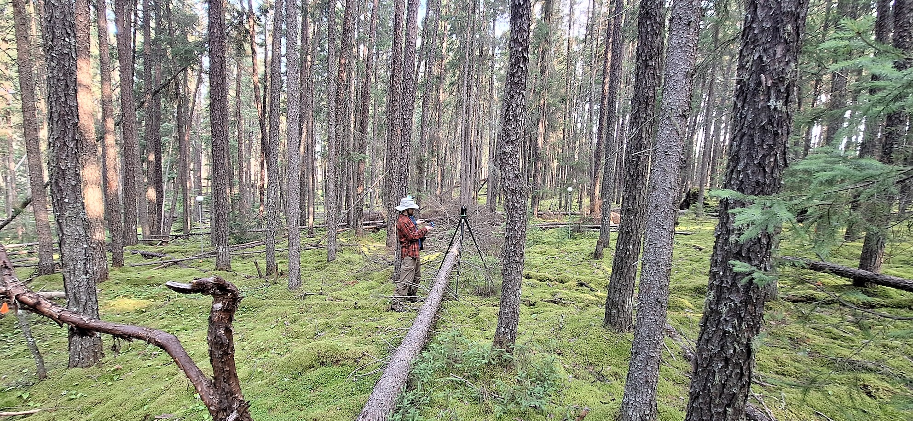
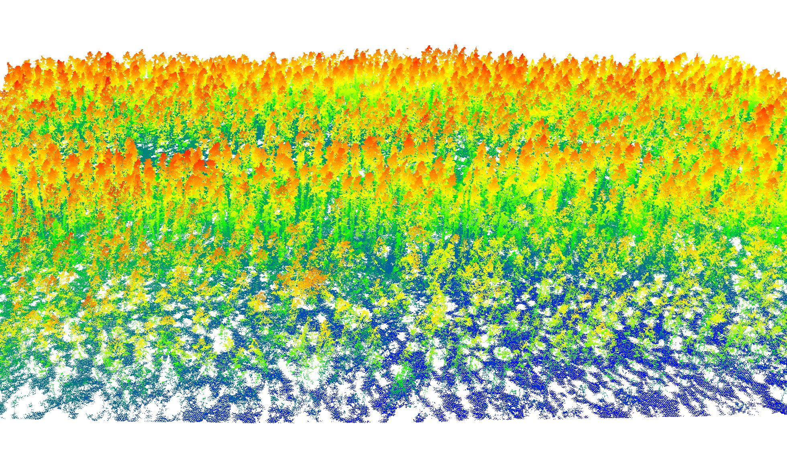

Goals
Our project is divided into four main goals, each improving the way in which we learn about fire behaviour and risk:

Goal 1: Optimizing ground-based lidar protocols
Traditional fuel measurements take a lot of time, are expensive, and can be error-prone. A cheaper and more reliable alternative to these manual measurements is to use ground-based lidar (Terrestrial or Mobile). However, current scanning protocols and post-processing pipelines to quantify fuels from this data are not standardized. Through this goal, we are investigating optimal ways to summarize lidar data to capture meaningful and useful fuel information to improve inference and risk assessments.
Collecting Terrestrial lidar data in a jack pine stand

image credit: Zackary Shakeri

Goal 2: Upscaling from terrestrial to airborne lidar
While plot data and ground-based lidar offer a great amount of fine-scale detail about fuel, in order to describe fuels at the scale of a fire, or a fuel management plan, a larger area must be covered. Airborne lidar (RPAS, or plane) enables data collection on a larger scale. Using state-of-the-art machine learning tools, we are combining ground-based lidar with large scale aerial data acquisition, to describe ground, understory and canopy fuels at a fine scale. The models created through this goal will provide downstream data for uptake in advanced fire modelling.
A UAV lidar scan of a jack pine forest 

Goal 3: Quantifying fuel connectivity
The movement of fire through a forest is in part a function of where there are things to burn (fuels). When fuels are poorly connected, a fire will spread slower. Current maps describing fuels on the landscape, and used to predict fire behaviour, are low-resolution, quickly out-dated, and often do not accurately represent fuels and their connectivity. Lidar data provides an opportunity to precisely describe the 3D connectivity of fuels. Our work effectively quantifying 3D fuel attributes will inform fire behaviour modelling for planning fire mitigation strategies.
An illustration of fine-scale fuel connectivity 

Goal 4: Creating novel tools for risk assessment
We are using outputs from goals 1-3 to model fire behaviour and spread at the stand- and landscape-scale, using simulation tools such as QUICFire and BurnP3+, improving risk assessment capacity around communities and other assets. We are also taking advantage of our novel 3D data to explore different fuel mitigation scenarios using Virtual Reality (VR), which will provide managers the opportunity to virtually walk through forests stands and apply fuel management prescriptions.
Illustration of a stand-scale fire spread simulator